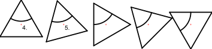

- Selecteer de objecten die u wilt verplaatsen of kopiëren.
- Start deze functie.
- Rotatiehoek in de opties werkbalk ingeven.
- Stel het referentiepunt in met de muis of voer een coördinaat in op de
opdrachtregel.
- Stel het doelpunt in.
In de onderstaande figuur zijn de twee referentiepunten aangegeven. De
rotatiehoek in het voorbeeld is 15 graden en het aantal exemplaren vier.
Dit resulteert in een totale rotatie van 60 graden.
- Het dialoogvenster "verplaatsen en roteren" wordt weergegeven.
Om de objecten te verplaatsen, kiest u "Origineel verwijderen", om
ze te kopiëren kiest u "Origineel bewaren". U kunt ook een willekeurig
aantal kopieën tegelijk maken door "Meerdere kopieën" te kiezen en het
aantal kopieën in de onderstaande blok in te voeren.
De nieuwe objecten worden op dezelfde laag geplaatst als de
originelen en hebben dezelfde attributen. Om de huidige laag en huidige
attributen te gebruiken, vinkt u in plaats daarvan "Gebruik huidige laag en
attributen" aan.
- Klik op "OK" om het objecten te verplaatsen en te draaien.
